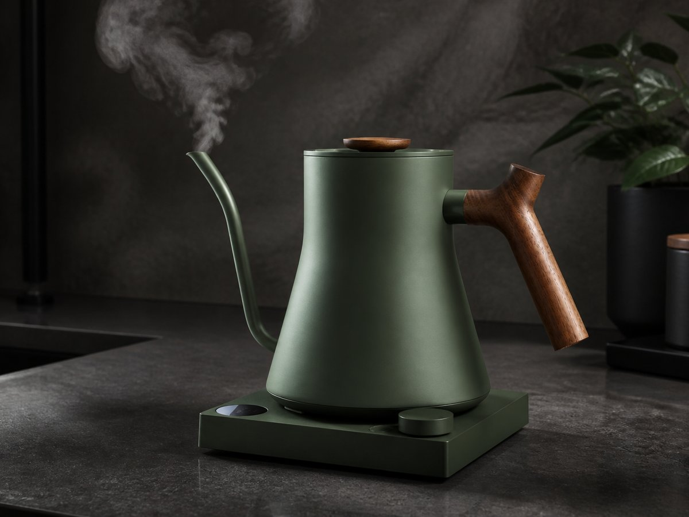
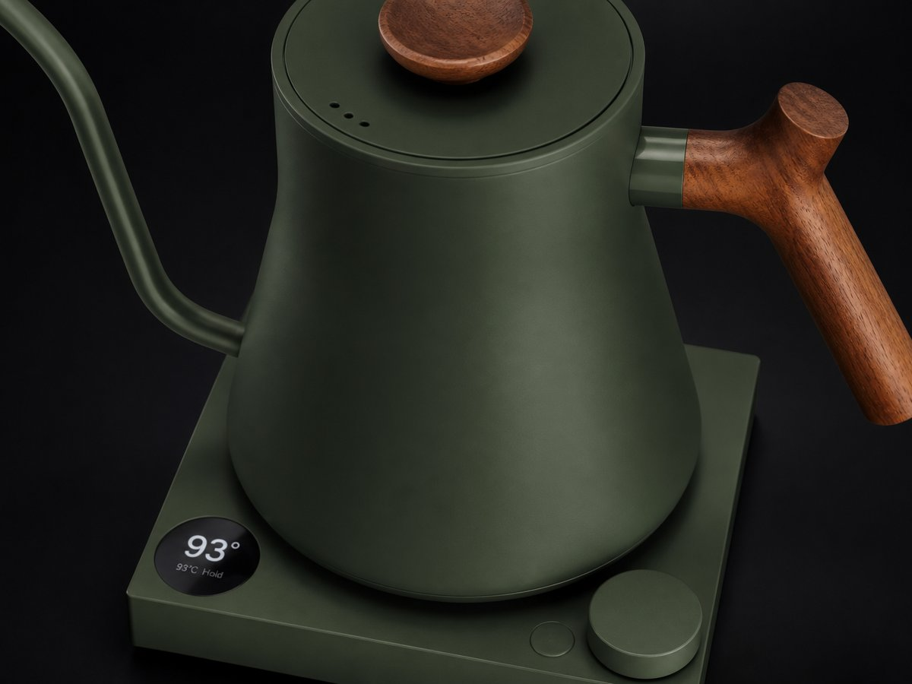
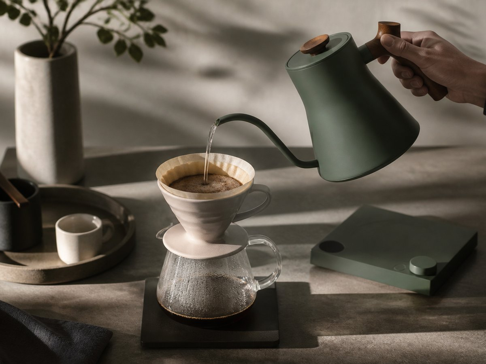
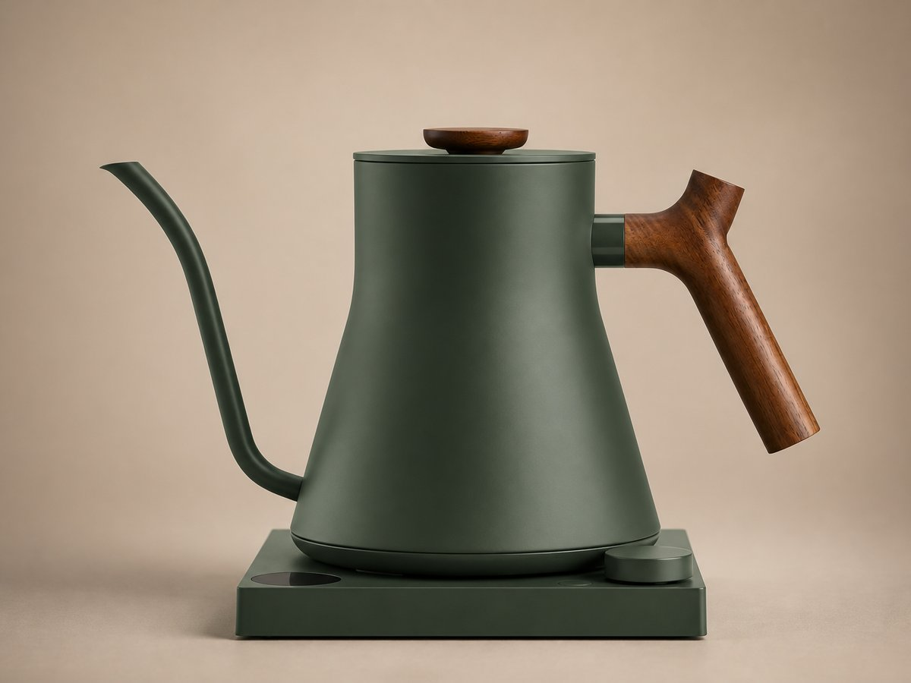
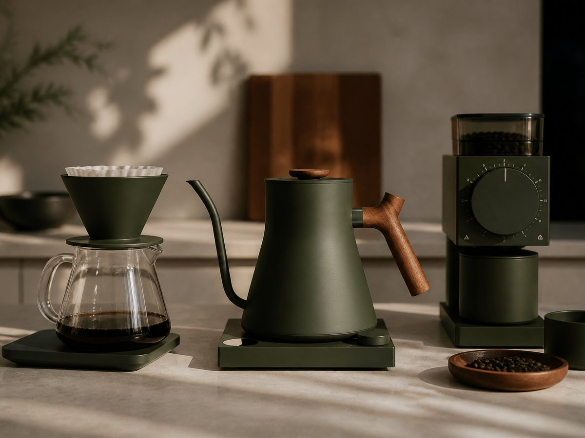
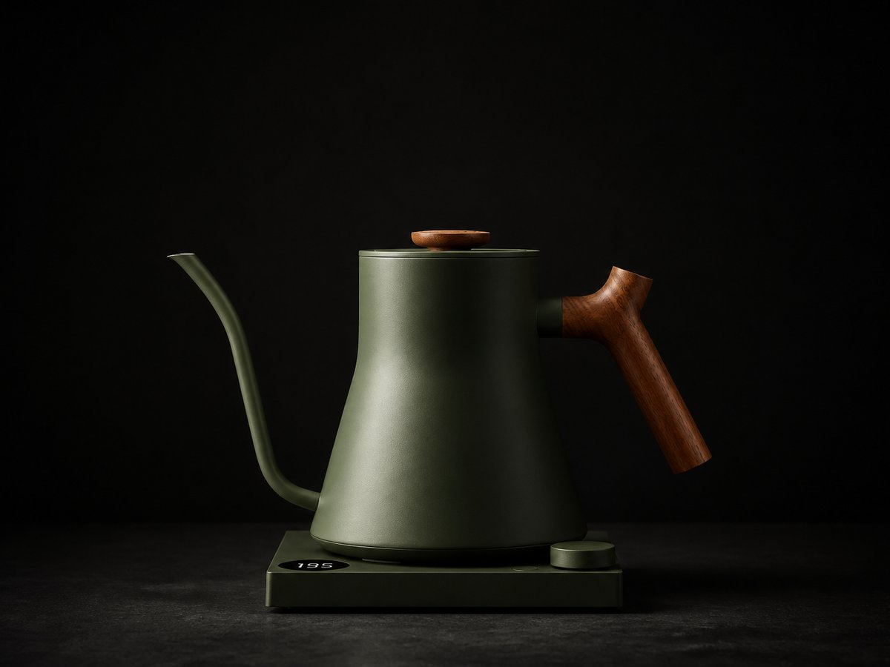

Konvice pro přesnost, kterou vidíš i cítíš
Přesná teplota. Dokonalé nalévání. Design, který zůstává na lince.
Fellow Stagg EKG je konvice pro lidi, kteří berou filtrovanou kávu vážně. Nabízí úzký husí krk pro přesné nalévání, čistý průběh teploty a minimalistický tvar, který působí jako nástroj, ne jako běžný spotřebič. Za cenu 4 990 Kč dostáváš designový kus na linku, který podtrhne každé ranní brew.


Teplota pod kontrolou po jednom stupni
Teplota pod kontrolou po jednom stupni
Když ladíš extrakci, rozhoduje detail. Stagg EKG nabízí rozsah teploty 40–100 °C po 1 °C, takže si nastavíš přesně to, co tvá káva nebo čaj potřebuje. Praktické udržení teploty 15/30/45/60 minut pomáhá držet rytmus přípravy bez zbytečného přihřívání a bez ztráty konzistence.
Nalévání, které sedí do ruky
Nalévání, které sedí do ruky
Úzký husí krk pro přesné nalévání dává plnou kontrolu nad rychlostí i směrem proudu. To je přesně to, co domácí baristé potřebují při bloom fázi, kroužení i finálním dolévání. Výsledek? Stabilnější extrakce, čistší chuť a méně improvizace v každém šálku.

Materiál, který působí jako nástroj
Materiál, který působí jako nástroj

Tělo z nerezové oceli 304 působí pevně, čistě a dlouhodobě. Konvice má objem 0,9 litru, hmotnost 1 400 g a rozměry 282×172×196 mm, takže na lince nepůsobí těžkopádně, ale stále drží jistotu v ruce. Je to přesně ten typ předmětu, který se neukrývá do skříně.
Technika, která podporuje rituál
Technika, která podporuje rituál
Pod kapotou je výkon 1000–1200 W, takže konvice pracuje svižně a s jistotou. V kombinaci s přesným nastavením teploty, udržením teploty 15/30/45/60 minut a objemem 0,9 litru získáš nástroj, který je stavěný pro pravidelný domácí brew, ne jen pro občasnou přípravu. Pokud miluješ minimalismus, tenhle kus techniky ti bude dávat smysl každý den.
| Výkon | 1000–1200 W |
| Teplota | 40–100 °C po 1 °C |
| Udržení teploty | 15/30/45/60 minut |
| Objem | 0,9 litru |
| Materiál | nerezová ocel 304 |
| Hmotnost | 1 400 g |
| Rozměry | 282×172×196 mm |

Pro koho je Fellow Stagg EKG
Pro koho je Fellow Stagg EKG
Je pro ty, kdo chtějí víc než jen horkou vodu. Pro domácí baristy, kteří ladí pour-over s přesností. Pro milovníky filtrované kávy, kteří chtějí kontrolu teploty i estetiku na lince. A pro každého, kdo preferuje tiché sebevědomí před okázalostí — minimalismus, preciznost a design v jednom.
Dopřej si přesnost i na kuchyňské lince
Dopřej si přesnost i na kuchyňské lince
Fellow Stagg EKG spojuje výkon 1000–1200 W, tělo z nerezové oceli 304, úzký husí krk pro přesné nalévání a ikonický minimalistický tvar. Pokud chceš konvici, která zlepší kontrolu i vzhled tvého koutku pro kávu, je čas ji přidat do košíku za 4 990 Kč.
